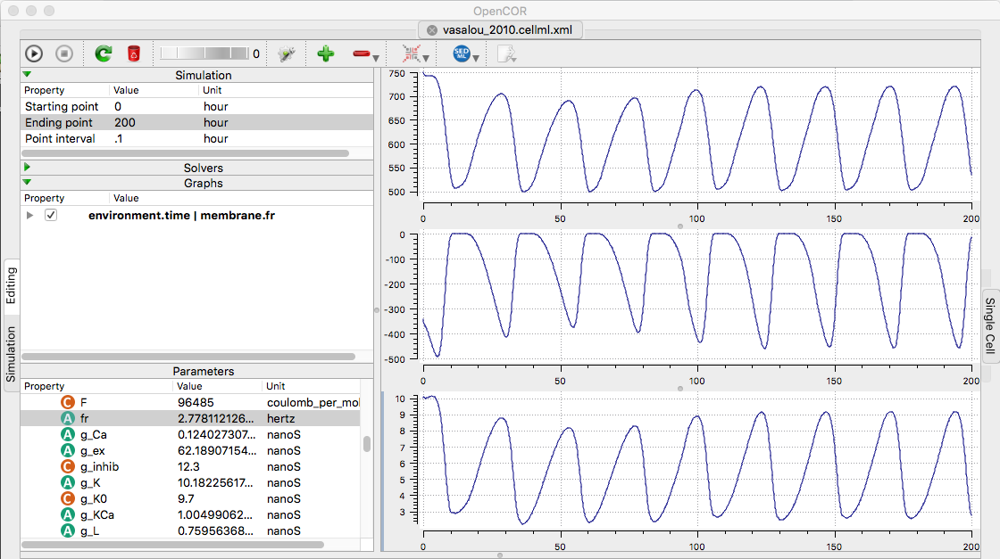

Vasalou C, Henson MA (2010) A multiscale model to investigate circadian rhythmicity of pacemaker neurons in the suprachiasmatic nucleus. PLoS Comput Biol 6:e1000706 [PubMed]
are available at the cellml.org website (translated from SBML from biomodels): https://models.cellml.org/e/25/vasalou_2010.cellml/view Example: To recreate a few traces in opencor from figure 2 in the paper, change the ending point to 100 hours and the interval point to 0.1 hours. The 100 hours lets the model stabilize. Create a few graphs (use "+" sign) and then populate the graphs by selecting a graph by clicking on it, and adding to one of each by right-clicking IK, ICa, and fr (firing rate) under the membrane list, and select Plot against integration variable. Running (click upper left play triangle) creates the following graph contain a few traces from figure 2  (Above traces are IK, ICa, and firing rate respectively plotted vs hours. Each cycle is 24 hours.)